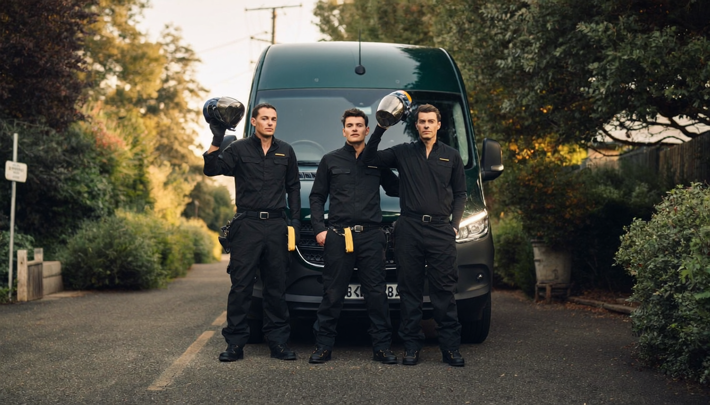

— Het team
— Het verhaal
Achttien jaar later zijn we met vier. Niet meer. Dat is een keuze.
We werken met één werf per keer, van begin tot einde. We laten geen onderaannemers los op een tuin die we zelf moeten opleveren. We bestellen onze planten bij twee Vlaamse kwekerijen waar we de kweker bij naam kennen, en onze bluesteen komt uit dezelfde groeve in Soignies waar Pieter z'n vader als jonge man al ging kijken.
Onze tuinen zijn niet de goedkoopste. Maar wij zijn wel de mensen die er — naar het einde van de afspraak — vrijdagmiddag staan met de bezem in de hand, omdat we toch nog dat ene blad zien liggen.
— De ploeg
— Hoe wij werken
Pieter komt zelf op het eerste bezoek, levert het ontwerp en is op de werf aanwezig. Geen telefonische tussenmensen.
Aanleg, bestrating, hekwerk, onderhoud — allemaal door dezelfde vier mensen. We dragen wat wij zelf hebben gemaakt.
Wat in de offerte staat, blijft in de offerte. Meerwerk alleen mits uw schriftelijk akkoord. Altijd.